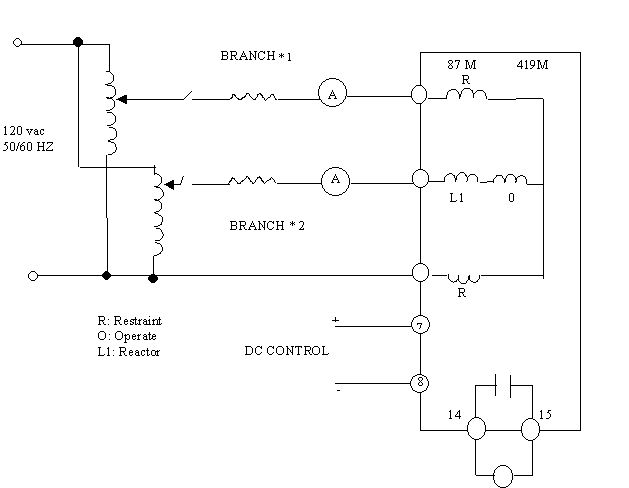

|
|
Protection
|
Technical Procedure
|
|
Equipment
Differential Relay
ITE 87-E |
Document
No: DfR-005-r0
|
| Issued
to:
Networks
|
| Status:
APPROVED |
Procedure:
Testing Procedure(s) |
Approved Date: 6 Nov 2000 |
| Date to
be Reviewed: Nov 2005 |
Introduction
The ITE 87-M machine Differential relay, the relay provides
fast sensitive differential protection for generators, motors and reactor. The relay has anon linear percentage differential
characteristic which allows operation for faults as low as 0.1 ampere, but
provides security against miss-operation on faults external to the Zone of
protection. The relay is inrush stabilized and detects all type of short
circuits in the item protected.
Safety Precautions
- The equipment ( for example reactor ) isolated and work permit required.
- Make sure that CT secondary are shorted before isolating the current
circuit for test current injection.
- Switch off DC power supply before inserting or with drawing any card from
the relay module.
Work to be Carried Out
Step to Prepare for Relay Testing
- Obtain outage for reactor protected by this relay
- obtains copy of relay setting from field maintenance file.
- Check that the bus-disconnect switch is opened and tagged.
- Inspect the CT secondary circuits and all cabling supplying the relay
including matching C.T
- use the station drawings to isolate the following.
-
Breaks trip coils.
- Breaker failure scheme associated with the relay
- Disturbance alarms and fault recorder associated with the relay
- Disconnect the DC MCB switch which feeding the relay.
Testing Procedure for the Shunt Reactor Protection 500KV
Differential Relay ITE 87-E Relay Injection Testing Procedures
Setup
- Take the differential relay ITE-87 M out at service by DC MCB switching
off.
- Isolate the initiation, circuit breaker failure SX 91 for the shunt
reactor by DC-MCB Switching off from the circuit breaker failure panel .
- With drawn the relay ITE-87M phase “A” out from its casing .
- Do not connect the reactor assembly reactor when making these tests on
419M series units. A post is provided on the upper printed circuit boo for
jumper to the temporarily installed to by pas the reactor “L1” the
reason for this is that many to sources do not have the voltage capability
to drive current through the reactor as shown in fig (1).
- From DC diagram in fig (1) of the relay ITE-87 M apply the correct dc
control voltage 220VDC external source to terminal (+7), (-8).
- From DC diagram in fig (1) of the relay connect the ten 14, 15 free
contact to ohmmeter for insuring the operation of the relay when injection.
- Secondary injection test set is ready for
ac. injection.
- Connect the secondary current from test set to terminal land 2 of the
relay ITE-87 M as shown in fig (1)
- Switch on the test set unit to inject d-c current
- Increase the ac. current from zero to the value of setting which adjusted
on the relay and record the operated current valve in the test sheet.
- The relay ITE-87 M will operate and and contact 14-15 must be closed.
- Decrease the ac. current until the relay reset and record this valve in
the test sheet.
- Switch off the test set unit.
- Repeat steps above from 3 to 13 respectively for testing phase “B” and
“C” .
|
I operate |
I reset |
K = I
reset
I operate |
Remark |
|
A |
|
|
|
|
B |
|
|
|
|
C |
|
|
|
Relay and Associated Equipment To Service
Return Relay to Service By Removing the Test Leads Terminals
From the Relay
- Insert the relay to the original position
- Make sure that the CT secondary circuits are in normal condition
- If any equipment associated with the relay has been isolated it should be
returned to service by the following steps:
-
Breakers trip coil.
- Breaker failure scheme associated with the relay.
- Disturbance alarms and fault recorder associated with the relay.
- Connect the DC MCB switch which feeding the relay.

Figure (1) Typical Acceptance Test Circuit
These instructions do not purport to cover all details or
variations in equipment not to provide for every possible contingency to be
met in connection with installation. Operation. Or maintenance. Should further
information be desired or should particular problems arise which are not
covered sufficiently for the purchaser’s purposes the matter should be
referred to Brown Boveri